Variational Autoencoders (VAEs) are a type of generative model that learn to encode and decode data. They are commonly used in image generation tasks, capturing complex patterns in the data distribution.
The project involves three architectures. The first two architectures are Variational Autoencoders. The first VAE comprises of an encoder (three sequential conv2d layers) a bottleneck layer (two FCs for mean and variance calculation and the reparametrization layer), and the decoder layer (three sequential convtranspose2d layer). The second architecture is the same as first, except that in the decoder layer we have three upsample + conv layers. This architecture is called VAE-Variation. And the third architecture is of a standard autoencoder.
The major inferences that can be drawn from observations are :
1. PSNR and LPIPS are the parameters that help us in understanding the performance of the model by comparing the generated image with it's ground truth value. A higher PSNR and a lower LPIPS indicates a good image.
2. The bottleneck layer disribution gives an indication of how easy it is to distinguish between classes. In other words, if a classifier is trained, how good or bad it'll perform.
3. The reconstructed image is the model output.
| Size of bottleneck layer | PSNR | LPIPS | Reconstructed Image | Bottleneck Layer distribution |
|---|---|---|---|---|
| 2 | 13.392175427879028 | 0.2470882730558514 | 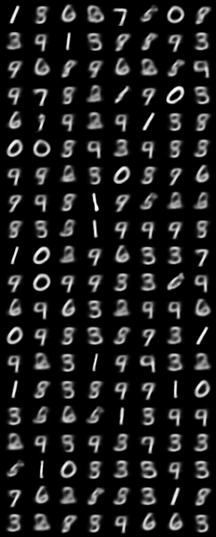 | 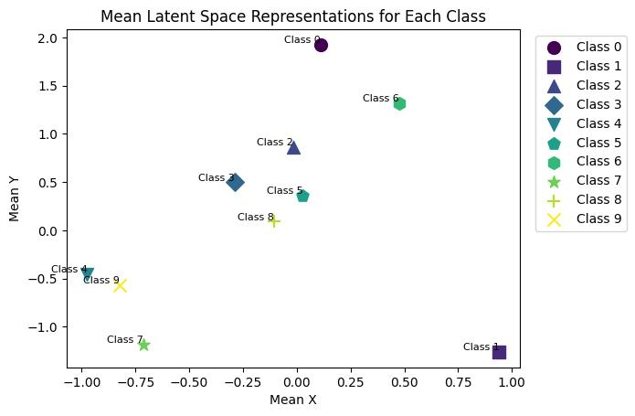 |
| 10 | 15.822724972980408 | 0.1317140911705792 | 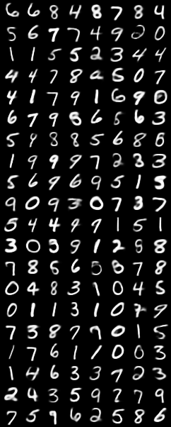 |
|
| Size of bottleneck layer | PSNR | LPIPS | Reconstructed Image | Bottleneck Layer distribution |
|---|---|---|---|---|
| 64 | 17.078560377700143 | 0.40190513152629137 | 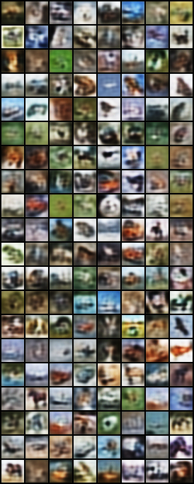 |

|
| 128 | 18.22797081576608 | 0.32085249945521355 | 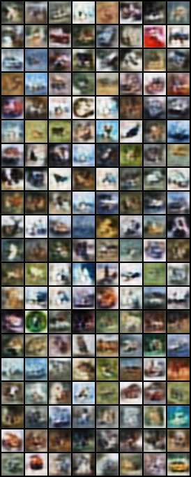 | 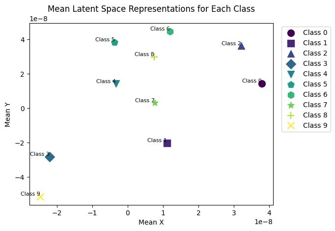 |
| 256 | 19.16980126602382 | 0.2600733716972172 | 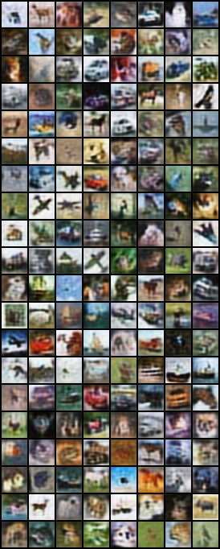 | 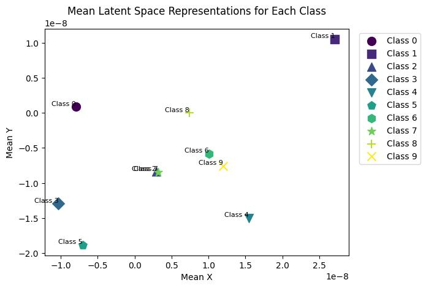 |
| Size of bottleneck layer | PSNR | LPIPS | Reconstructed Image | Bottleneck Layer distribution |
|---|---|---|---|---|
| 2 | 12.861776072285114 | 0.2801305861212313 | 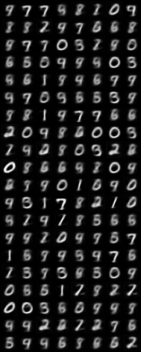 | 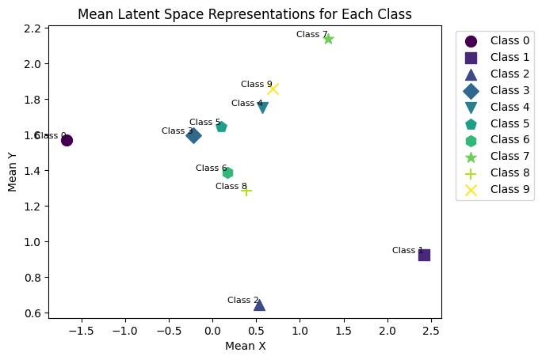 |
| 10 | 18.255316526550935 | 0.15646151930559427 | 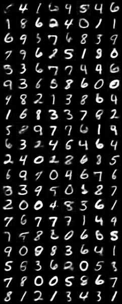 | 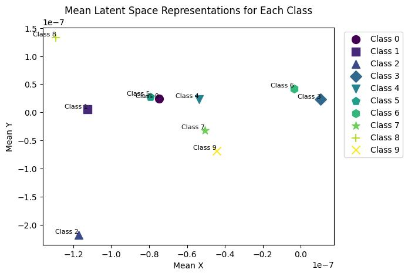 |
| Size of bottleneck layer | PSNR | LPIPS | Reconstructed Image | Bottleneck Layer distribution |
|---|---|---|---|---|
| 64 | 14.979190799345862 | 0.4430371061898768 | 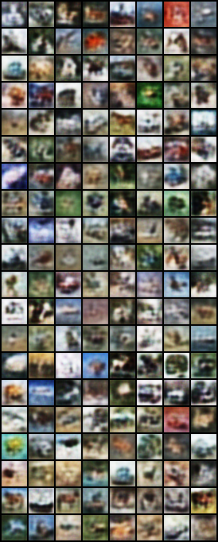 | 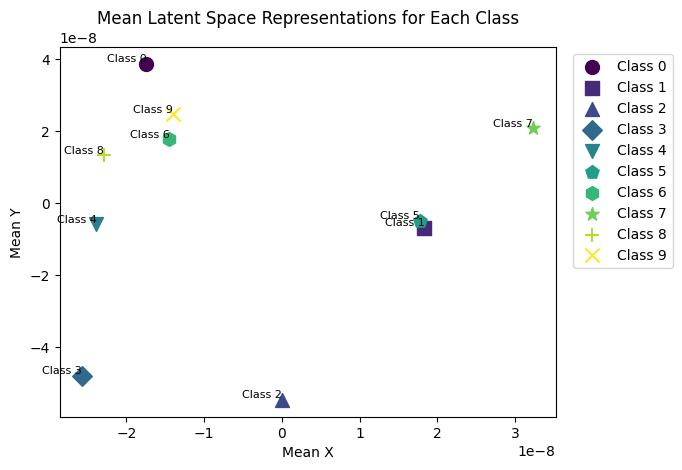 |
| 128 | 16.356243858018694 | 0.3574161999858916 | 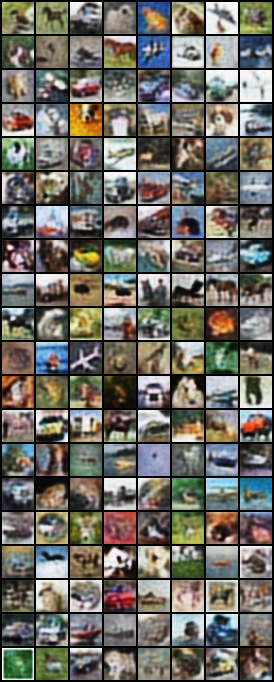 | 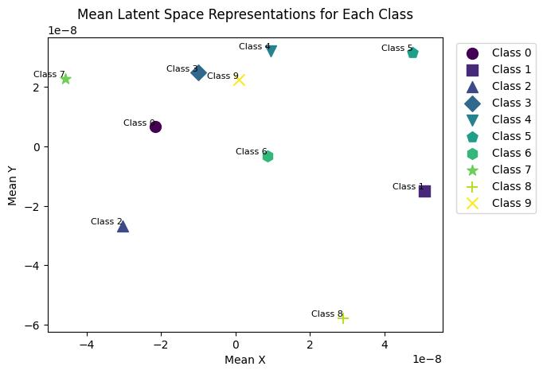 |
| 256 | 16.965382100831732 | 0.3165968810208142 | 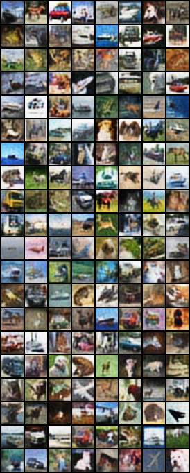 | 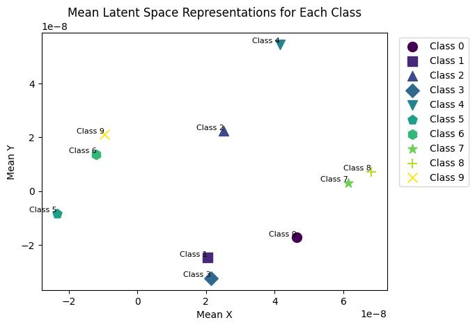 |
The major conclusions that can be drawn from observations are :
1. Increasing the bottleneck layer size imporves performance.
2. Concluding anything on classification accuracy is not possible.
3. The image quality gets better with increasing bottleneck layer size.